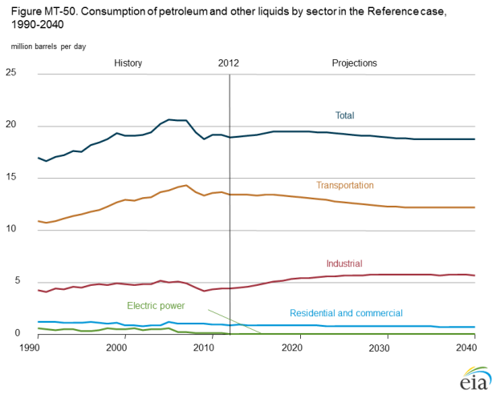
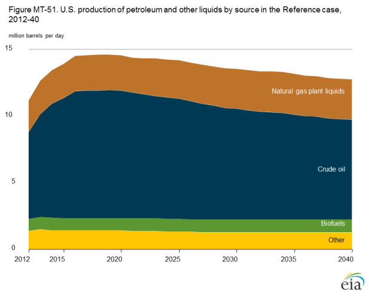
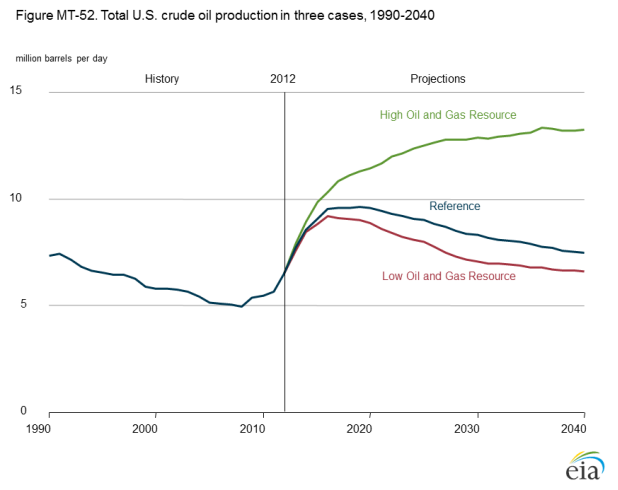
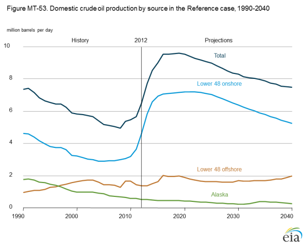
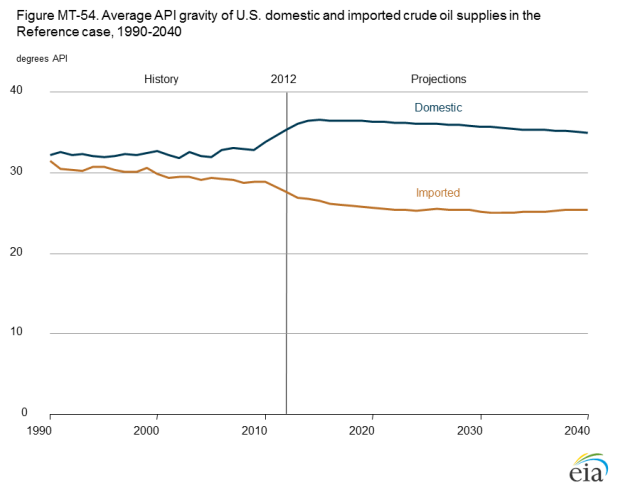
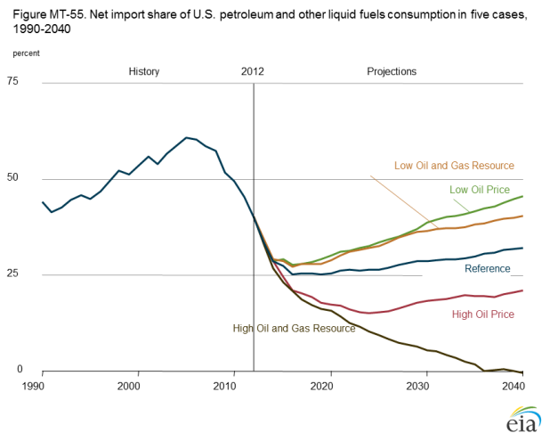
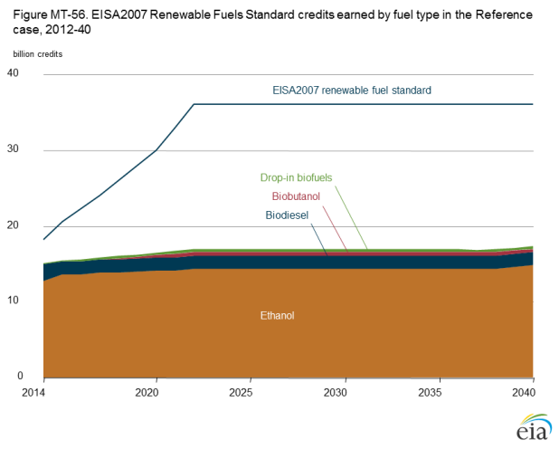
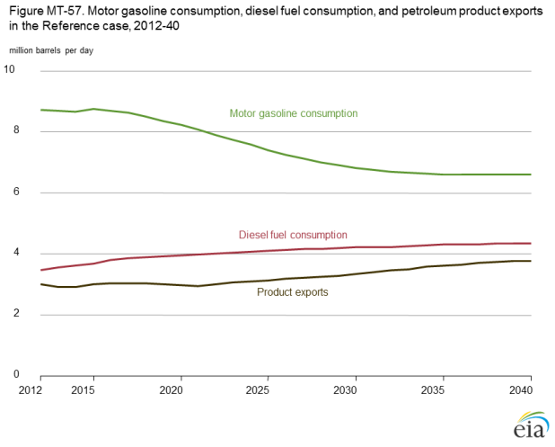
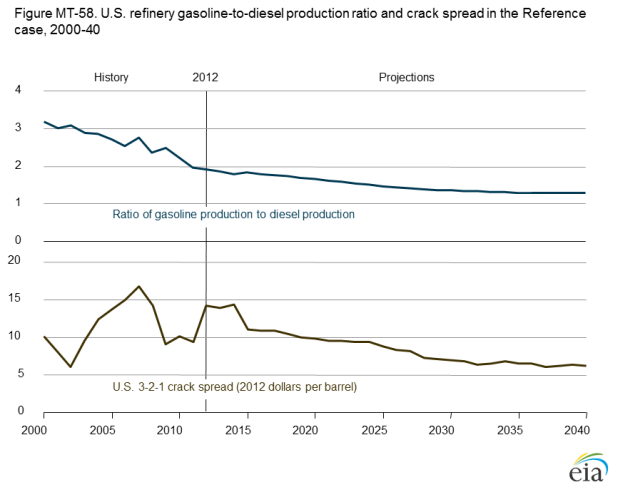
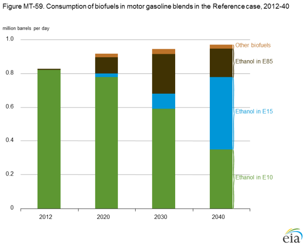

{kind=link}
{kind=link}
Annual Energy Outlook 2014
Release Date: May 7, 2014 | Next Release Date: March 2015 | See schedule | full report
Market Trends: Liquid fuels
Led by transportation, petroleum and other liquids consumption declines
Consumption of petroleum and other liquids remains relatively flat in volumetric terms in the AEO2014 Reference case (Figure MT-50). While the transportation sector accounts for the largest share of total consumption throughout the projection, its share falls from 72% in 2013 to 65% in 2040, as a result of improvements in vehicle efficiency following the incorporation of corporate average fuel economy (CAFE) standards for both light-duty vehicles (LDVs) and heavy-duty vehicles (HDVs). In the industrial sector, consumption in the chemicals industry increases by 1.3 million barrels per day (MMbbl/d) from 2012 to 2040, largely reflecting higher volumes of hydrocarbon gas liquids as the sector benefits from increased U.S. production of natural gas. Consumption in all other industry segments decreases between 2012 and 2040.

figure data
Motor gasoline, ultra-low-sulfur diesel fuel, and jet fuel are the primary transportation fuels, all of which can include biofuels and may be supplemented by natural gas. Total motor gasoline consumption increases from 2012 to 2015 before dropping by approximately 2.1 MMbbl/d from 2015 to 2040 in the Reference case, while total diesel fuel consumption increases from 3.4 MMbbl/d in 2012 to 4.3 MMbbl/d in 2040, primarily for use in HDVs.
Both ethanol blending into gasoline and E85 consumption are essentially flat throughout the projection period, as a result of declining gasoline consumption and limited penetration of FFVs. The rapid rise of U.S. crude oil production, combined with the decline in motor gasoline demand and a modest increase in diesel fuel demand, reduces market opportunities for CTL and GTL technologies.
Crude oil leads initial growth in liquids supply, next-generation liquids grow slowly after 2020
In the AEO2014 Reference case, petroleum and other liquids supply grows through 2019 as a result of increases in production of tight oil (including condensates) and natural gas plant liquids (NGPL) (Figure MT-51). Total liquids production grows from 11.1 MMbbl/d in 2012 to a peak of 14.6 MMbbl/d in 2019, then drops to 12.7 MMbbl/d in 2040—still above 2012 levels—as tight oil production declines.

figure data
Production of hydrocarbon gas liquids (HGL) [12] increases throughout the projection. HGL is a new term introduced in the analysis to account for NGPL produced from natural gas processing plants and fractionators, and the liquefied refinery gases from crude oil in refineries. NGPL production increases from 2.4 MMbbl/d in 2012 to about 3.0 MMbbl/d in 2030, then remains level after 2030, as growth in natural gas production slows.
Domestic ethanol production remains relatively flat, as consumption of motor gasoline decreases and the penetration of ethanol is slowed by the limited availability of flex-fuel vehicles and retrofitted filling stations. Biodiesel production is also constant throughout the projection on the assumption that the U.S. Environmental Protection Agency (EPA) will indefinitely continue the current requirement of 1.28 billion gallons per year under the RFS.
Other biomass-to-liquids production, excluding ethanol and biodiesel, increases by 32,200 bbl/d from 2012 to 2040. However, neither gas-to-liquids (GTL) nor coal-to-liquids (CTL) contributes to domestic liquids production in the Reference case because of the risks associated with their high capital costs, long construction leadtimes, and the possibility that liquids from CTL facilities will not remain price-competitive with crude oil over the lifetimes of the facilities.
U.S. crude oil production rates depend on resource availability and production costs
Projections of U.S. tight oil production are uncertain, because large portions of the known formations have little or no production history, and because technology improvements could increase well productivity while reducing drilling, completion, and production costs. The High and Low Oil and Gas Resource cases illustrate the potential impacts of changes in the Reference case assumptions regarding technology advances and the resource size and quality.
The High Oil and Gas Resource case assumes more onshore lower 48 tight resources than in the Reference case, as a result of higher EUR per well and closer well spacing; tight oil development in Alaska; more offshore resources in Alaska and the lower 48 states; and more rapid technology improvements over the long term.
In the High Oil and Gas Resource case, higher well productivity reduces development and production costs per unit, resulting in more and earlier development of oil and gas resources than in the Reference case (Figure MT-52). U.S. crude oil production in the High Oil and Gas Resource case reaches 13.3 MMbbl/d in 2036, compared with an earlier and lower projected high point of 9.6 MMbbl/d in 2019 in the Reference case. Cumulative production in the High Oil and Gas Resource case is about 125 billion barrels—compared to about 90 billion barrels in the Reference case—from 2012 to 2040.

figure data
In the Low Oil and Gas Resource case, which assumes lower estimates of tight resources than in the Reference case, crude oil production plateaus at an earlier and lower projected high of 9.2 MMbbl/d in 2016 before declining. With production of tight oil continuing to decline through 2040 in the Low Oil and Gas Resource case, cumulative crude oil production from 2012 to 2040 is 10% lower than in the Reference case, at about 81 billion barrels.
Lower 48 onshore tight oil development spurs increase in U.S. crude oil production
U.S. crude oil production grows from 2012 through 2019 in the Reference case, before peaking at more than 9.6 million barrels per day (MMbbl/d)—about 3.1 MMbbl/d above the 2012 total and close to the historical high of 9.6 MMbbl/d in 1970 (Figure MT-53). The growth in lower 48 onshore crude oil production is primarily a result of continued development of tight oil resources in the Bakken, Eagle Ford, and Permian Basin formations. Tight oil production increases to a peak of 4.8 MMbbl/d from 2018 through 2021 and then declines to about 3.2 MMbbl/d in 2040 (0.9 MMbbl/d higher than the 2012 total) as high-productivity areas, or sweet spots, are depleted. There is considerable uncertainty about the expected peak level of tight oil production, because ongoing exploration, appraisal, and development programs expand operator knowledge about producing reservoirs and could result in the identification of additional tight oil resources.

figure data
Crude oil production using carbon dioxide-enhanced oil recovery (CO2-EOR) increases after 2017—when oil prices rise, and as output from the more profitable tight oil deposits begins declining and affordable anthropogenic sources of carbon dioxide (CO2) become available—to 0.7 MMbbl/d in 2040. The rate of the increase is slower over the last five years, when production is limited by reservoir quality and CO2 availability. From 2013 through 2040, cumulative crude oil production from CO2-EOR projects totals 5.2 billion barrels.
Lower 48 offshore oil production varies between 1.4 MMbbl/d and 2.0 MMbbl/d over the projection period. Toward the end of the period, the pace of exploration and production activity quickens, and new large development projects, associated predominantly with discoveries in the deepwater and ultra-deepwater portions of the Gulf of Mexico, are brought on stream. New offshore oil production from the Alaska North Slope partially offsets the decline in production from onshore North Slope fields.
Domestic production of tight oil leads to lower imports of light sweet crude oil
API gravity is a measure of the specific gravity, or relative density, of a liquid, as defined by the American Petroleum Institute. It is expressed in degrees, where a higher number indicates a lower density. Refineries generally process a mix of crude oils with a range of API gravities to optimize refinery operations. Over the past 15 years, the API gravity of crude oil processed in U.S. refineries has averaged between 30 and 32 degrees. As U.S. refiners run more domestic light crude oil produced from tight formations, they need less imported light crude to maintain an optimal API gravity. With increasing U.S. production of light crude oil in the AEO2014 Reference case, the average API gravity of crude oil imports declines from 27.6 degrees in 2012 to 25.6 degrees in 2040 (Figure MT-54).

figure data
With total crude oil imports declining in the Reference case, imports of light crude oil are reduced, resulting in a heavier slate of imported crude oil. The growing share of heavier crude oil imports continues through 2025 before stabilizing. The increase in demand for diesel fuel in the Reference case, from 3.4 MMbbl/d in 2012 to 4.3 MMbbl/d in 2040, combined with a steady increase in exports of distillate fuel oil from 1.0 MMbbl/d to 1.1 MMbbl/d over the same period, increases the value of heavier crudes in U.S. refineries.
The large increase in domestic production of light crude oil and the increase in imports of heavier crude oils have prompted significant investments in the midstream infrastructure for crude oil, including pipelines that will bring higher quantities of light sweet and heavy sour crudes to petroleum refineries along the U.S. Gulf Coast. In addition, significant investments have been made to move crude oil by rail to refineries on the East Coast, West Coast, and Gulf Coast.
Increasing U.S. oil supply reduces net imports of petroleum and other liquid fuels
The net crude oil and product imports share of U.S. petroleum and other liquid fuels consumption grew from the mid-1980s to 2005 but has fallen steadily since 2005 (Figure MT-55). Because each barrel of U.S. crude oil production displaces a barrel of imported crude oil, the outlook for net petroleum and other liquid fuel imports in the High and Low Oil Price and High and Low Oil and Gas Resource cases depends on U.S. oil production.

figure data
The net import share of U.S. petroleum and other liquid fuels consumption declines from 2012 through 2023 in the AEO2014 Reference case, largely because of projected growth in tight oil production. The net import share declines to 25% in 2019, coinciding with a peak in U.S. oil production of 9.6 MMbbl/d, then increases to 32% in 2040 after domestic oil production declines.
Higher oil prices encourage more rapid and extensive oil resource development. In the High Oil Price case, the share of domestic consumption accounted for by imports of petroleum and liquid fuels drops to 15% in 2023, then grows to 21% in 2040. The opposite occurs in the Low Oil Price case, with the petroleum and other liquids imports share of domestic consumption rising after 2016, to 46% in 2040.
In the High Oil and Gas Resource case, improvements in oil production technology beyond those in the Reference case, along with 1% annual growth in estimated ultimate recovery (EUR), lead to higher U.S. crude oil production. In 2036, U.S. crude production peaks at 13.3 MMbbl/d, and net U.S. imports of crude oil and petroleum products fall to virtually zero, where they remain through 2040. The Low Oil and Gas Resource case uses the same production technology assumptions as the Reference case but assumes a 50% lower EUR. As in the Low Price case, net imports begin to rise in 2016 and increase to 40% of U.S. consumption in 2040.
U.S. consumption of biofuels grows but does not approach EISA2007 applicable volumes
Consumption of biofuels grows in the AEO2014 Reference case but falls well short of the Energy Independence and Security Act of 2007 (EISA2007) RFS target [13] of 36 billion ethanol gallon equivalents in 2022 (Figure MT-56), largely because of a decline in gasoline consumption as a result of newly enacted corporate average fuel economy (CAFE) standards and updated expectations for sales of vehicles capable of using E85. Demand for motor gasoline ethanol blends (E10 and E15) falls from 8.7 MMbbl/d in 2012 to 7.9 MMbbl/d in 2022, while total biofuels consumption rises from 14 billion gallons to 16 billion ethanol gallons equivalent over the same period.

figure data
The current and projected vehicle fleets are not equipped to use ethanol’s increased octane content relative to gasoline. As a result, the retail price of E85 must be less than 79% of the motor gasoline price for E85 to gain significant market share. In the Reference case, with the lowest ratio of E85 to gasoline prices at 77% in 2022, market penetration of E85 is modest, and the RFS program does not provide sufficient incentives to promote significant new ethanol production capacity.
In the Reference case, as gasoline demand continues to drop and E85 consumption levels off, total ethanol consumption grows to about 14 billion gallons in 2022 and remains there until late in the projection. Consumption of biodiesel falls in the near term, as production of drop-in biofuels grows. Domestic consumption of drop-in biofuels grows from 135 million ethanol gallons equivalent in 2014 to 316 million ethanol gallons equivalent in 2019. Biobutanol consumption rises after 2019, to about 516 million gallons in 2040.
A variety of factors leads to a shift in consumption from motor gasoline to diesel fuel
Based on the NHTSA and EPA GHG and CAFE standards, EIA projects that new light-duty vehicles (LDVs) will average approximately 47 mpg in 2025. These efficiency standards contribute to a decline in consumption of motor gasoline, while increases in vehicle miles traveled (VMT) and renewable fuel standards (RFS) lead to an increase in consumption of diesel fuel and ethanol in the Reference case. As a result of rising fuel economy standards, motor gasoline consumption by LDVs falls over the projection period while total VMT increase.
The decrease in gasoline consumption, combined with growth in diesel consumption, leads to a shift in refinery outputs and investments. Motor gasoline consumption and diesel fuel consumption trend in opposite directions in the Reference case, with consumption of diesel fuel increasing by approximately 0.9 MMbbl/d from 2012 to 2040, while finished motor gasoline consumption falls by 2.1 MMbbl/d (Figure MT-57). New refinery projects are expected to focus on shifting production from gasoline to distillate fuels to meet the growing demand for diesel.

figure data
As a result of refinery economics and slower growth in domestic demand, no new petroleum refinery crude unit capacity is built in the Reference case, except for plants already under construction in 2012. Further, the refining system has at least 2 MMbbl/d of excess crude oil capacity beginning in 2015. In addition to meeting domestic demand, refineries continue to export finished products to international markets throughout the projection. Beginning in 2016, gross exports of total finished petroleum products increase to 3.0 MMbbl/d for the first time, and in 2040 exceed 3.7 MMbbl/d (Figure MT-57). The United States became a net exporter of finished petroleum products in 2011, and in the Reference case, it remains a net exporter through 2040.
Shifts in demand for liquid fuels change petroleum refinery yields and crack spreads
The transition to lower gasoline and higher diesel production has a significant effect on petroleum refinery operations in the AEO2014 Reference case, with the ratio of gasoline to diesel production declining from 1.8 in 2012 to below 1.3 in 2040 (Figure MT-58). In response to the drop in gasoline demand, refinery utilization of fluid catalytic cracking (FCC) units falls from 67% in 2012 to about 55% in 2040. In contrast, with diesel production increasing, installed distillate and gas oil hydrocracking capacity grows from about 2.2 MMbbl/d in 2012 to 2.9 MMbbl/d in 2040, indicating a shift from FCC feeds to hydrocrackers to maximize diesel production.

figure data
Refinery profitability is a function of crude input costs, processing costs, and market prices for the end products. Profitability often is estimated from the crack spread, which is the difference between the price of crude oil and the price of finished products—typically, gasoline and distillate fuel. The 3-2-1 crack spread estimates the profitability of processing three barrels of crude oil to produce two barrels of gasoline and one barrel of distillate. In the Reference case, the 3-2-1 crack spread (based on Brent crude oil prices) declines from $14/barrel in 2012 to about $6/barrel in 2040 (2012 dollars). In the current environment, the gross margin would vary with the differential between Brent and Gulf Coast light crude oil prices.
To relate the gross margin to refinery profitability, operating costs for specific refineries also must be deducted. As product demands shift, petroleum refineries may alter the ratio of gasoline to diesel production. A 5-3-2 crack spread estimates the profitability of processing five barrels of crude oil into three barrels of gasoline and two barrels of distillate, more consistent with the 1.3 gasoline-to-diesel production ratio after 2035.
Consumption of biofuels blended into motor gasoline increases in response to RFS targets
In the AEO2014 Reference case, consumption of E15 motor gasoline (15% ethanol, 85% gasoline) and E85 motor gasoline (average 74% ethanol, 26% gasoline) increases at the expense of E10 motor gasoline (10% ethanol, 90% gasoline) (Figure MT-59). The shift depends on the level of RFS targets, infrastructure issues, the relative costs of E15 and biobutanol blends compared to E10 and E85, and the general market acceptability of manufacturers' automobile warranties.

figure data
In response to RFS renewable fuel targets and market conditions, consumption of E15 increases in the Reference case, both in absolute terms and relative to E10 consumption. The growth of E15 consumption also displaces potential consumption of biobutanol blends, such as Bu16 (16% biobutanol, 84% gasoline).
Starting in about 2020, E15 slowly penetrates the motor gasoline market, as blend wall issues are assumed to be resolved over time [14]. In 2040, E15 makes up approximately 40% of the total motor gasoline market. Consumption of biobutanolblended gasoline remains low, as it competes with E15 for market share. Although E85 is used in the motor gasoline market throughout the projection, its share of the market declines after 2032, when most cars are capable of using E15.
The increase in consumption of E15 in the Reference case is based on the assumption that consumers, refiners, and vehicle manufacturers will prefer E15 over E85 and biobutanol blends, and that infrastructure constraints will be resolved gradually over time. In addition to the biofuels blended into motor gasoline shown in Figure MT-59, the RFS also promotes consumption of other biofuels—such as biodiesel, renewable diesel, and renewable gasoline—that are not blended in fixed percentages with petroleum-based motor gasoline.
Endnotes
- HGL is a new term that accounts for similar fuels produced from both natural gas and petroleum through different processes. A description of the term HGL and how related terms are applied can be found at http://www.eia.gov/ngl/.
- U.S. Environmental Protection Agency, "EPA Finalizes 2012 Renewable Fuel Standards," EPA-420-F-11-044 (Washington, DC: December 2011), http://www.epa.gov/otaq/fuels/renewablefuels/documents/420f11044.pdf.
- U.S. Energy Information Administration, This Week in Petroleum (November 23, 2011), http://www.eia.gov/oog/info/twip/ twiparch/2011/111123/twipprint.html.
In This Section
- Led by transportation, petroleum and other liquids consumption declines
- Crude oil leads initial growth in liquids supply, next-generation liquids grow slowly after 2020
- U.S. crude oil production rates depend on resource availability and production costs
- Lower 48 onshore tight oil development spurs increase in U.S. crude oil production
- Domestic production of tight oil leads to lower imports of light sweet crude oil
- Increasing U.S. supply reduces net imports of petroleum and other liquid fuels
- U.S. consumption of biofuels grows but does not approach EISA2007 applicable volumes
- A variety of factors leads to a shift in consumption from motor gasoline to diesel fuel
- Shifts in demand for liquid fuels change petroleum refinery yields and crack spreads
- Consumption of biofuels blended into motor gasoline increases in response to RFS targets